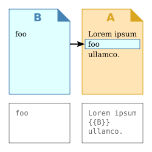

Angular Directives
Bind My Ember Components
by @johnkpaul
NgConf
Ember Components
Transclude My Directives
by @johnkpaul
EmberConf
Who?
John K. Paul
I ♥ JavaScript
@johnkpaul
john@johnkpaul.com
johnkpaul.com
Transclusion isn't so bad

^^^^ that's a transclusion
^^^^ that's a transclusion
/(Web) Components/
- Roll your own reusable widgets
- Fully encapsulate HTML, CSS, and JS

/(Web)|(Ember) Components/
- Roll your own reusable widgets now
- Encapsulate structure and behavior
What got me hooked

What got me hooked
JS BinEmber Tabs
JS BinComponent Lists

Questions?
@johnkpaul
EmberConf